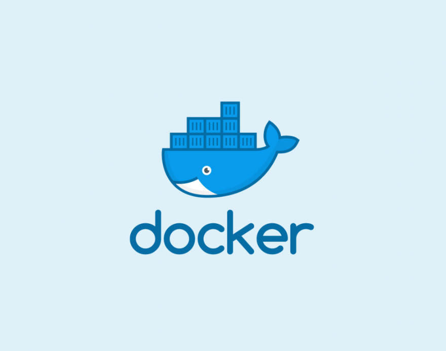

Гайд по Docker

Введение в Docker
Docker — это платформа для разработки, доставки и запуска контейнеризированных приложений. Она позволяет упаковывать приложения и их зависимости в контейнеры, которые можно запускать на любой системе, поддерживающей Docker. Это обеспечивает консистентность среды, упрощает развертывание и масштабирование приложений.
Если вы хотите улучшить процесс разработки и развертывания приложений, Docker станет вашим надежным помощником.
1. Основные концепции Docker
Перед тем как начать работу с Docker, важно понять его ключевые компоненты:
- Контейнер (Container): Легковесная и изолированная среда выполнения приложения, которая включает в себя все необходимые зависимости.
- Образ (Image): Шаблон, из которого создаются контейнеры. Образ содержит все файлы, необходимые для запуска приложения.
- Dockerfile: Текстовый файл, содержащий инструкции по сборке образа.
- Реестр (Registry): Хранилище для образов Docker. Docker Hub — это общедоступный реестр, где можно найти множество готовых образов.
- Docker Engine: Основной компонент Docker, который управляет контейнерами и образами.
2. Установка Docker
Для начала работы вам нужно установить Docker. Вот несколько популярных способов:
- Установка на Windows и MacOS
Скачайте Docker Desktop с официального сайта и следуйте инструкциям установщика.
- Установка на Linux
Для установки на Ubuntu выполните следующие команды:
sudo apt-get update
sudo apt-get install docker-ce docker-ce-cli containerd.io
Проверьте установку:
docker --version
3. Базовые команды Docker
Docker управляется через CLI-инструмент. Вот основные команды:
-
Просмотр списка контейнеров:
docker ps -
Запуск нового контейнера:
docker run -d --name my-container nginx -
Остановка контейнера:
docker stop my-container -
Удаление контейнера:
docker rm my-container -
Сборка образа из Dockerfile:
docker build -t my-image .
4. Создание Dockerfile
Dockerfile — это текстовый файл с инструкциями по сборке образа. Вот пример простого Dockerfile:
# Используем базовый образ
FROM python:3.9-slim
# Устанавливаем зависимости
RUN pip install flask
# Копируем приложение в контейнер
COPY . /app
# Устанавливаем рабочую директорию
WORKDIR /app
# Указываем команду для запуска приложения
CMD ["python", "app.py"]
Соберите образ:
docker build -t my-flask-app .
Запустите контейнер:
docker run -d -p 5000:5000 my-flask-app
5. Работа с Docker Compose
Docker Compose позволяет управлять многоконтейнерными приложениями. Вот пример файла docker-compose.yml:
version: '3'
services:
web:
image: my-flask-app
ports:
- "5000:5000"
redis:
image: "redis:alpine"
Запустите приложение:
docker-compose up
6. Мониторинг и логирование
Для мониторинга контейнеров можно использовать такие инструменты, как: - Prometheus: Сбор метрик. - Grafana: Визуализация данных. - ELK Stack (Elasticsearch, Logstash, Kibana): Логирование.
7. Советы по оптимизации
- Используйте многоступенчевую сборку: Разделите Dockerfile на несколько этапов, чтобы уменьшить размер конечного образа.
- Ограничьте ресурсы: Установите лимиты CPU и памяти для контейнеров.
- Используйте кэширование: Оптимизируйте Dockerfile для использования кэша Docker.
Заключение
Docker — мощный инструмент для управления контейнеризированными приложениями. Начав с базовых концепций и освоив основные команды, вы сможете эффективно использовать его возможности. Помните, что работа с Docker требует практики, поэтому не бойтесь экспериментировать!
Готовы начать? Удачи в изучении Docker! 🚀
Этот гайд поможет вам начать работу с Docker и понять его основные концепции и возможности.